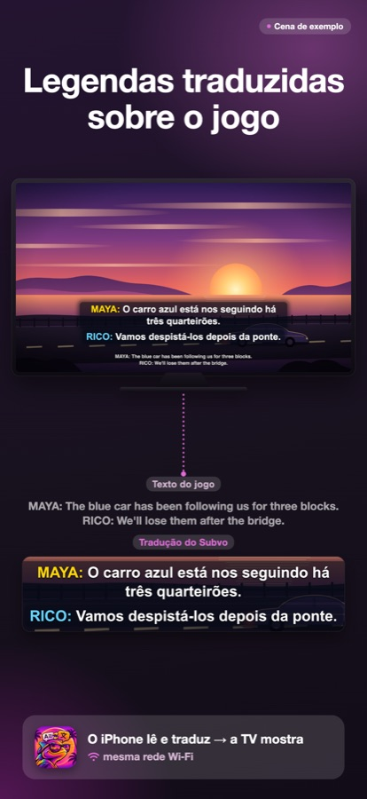
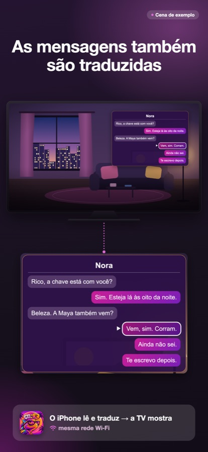
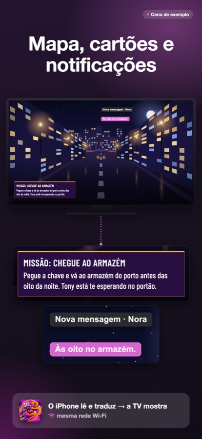
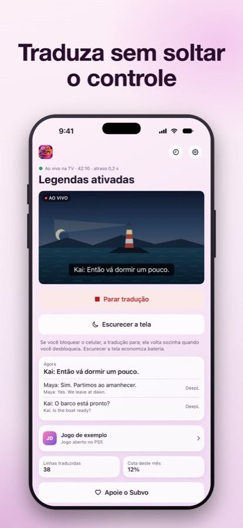
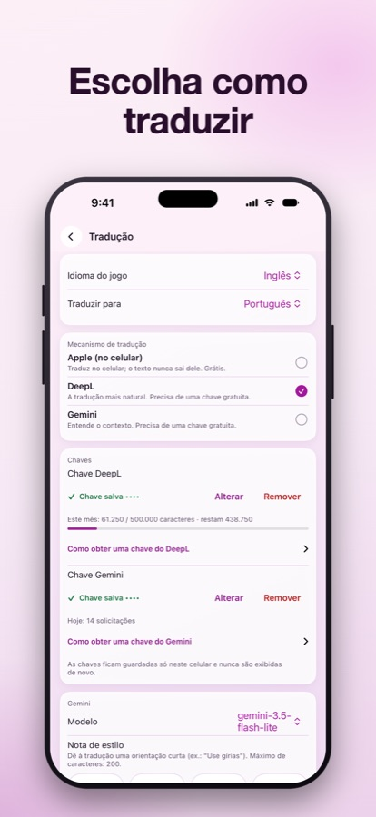
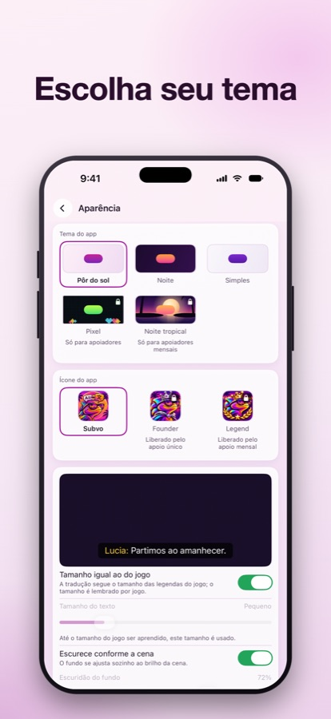

Subvo
SubvoO texto do jogo, na TV, no seu idioma.
O Subvo lê no iPhone o texto do seu jogo de PS5, traduz e mostra a tradução na TV, logo por cima do jogo. Você não precisa largar o controle.
Grátis e sem anúncios. iPhone, PlayStation 5 e TV Samsung ou LG.

Não só legendas
Além dos diálogos, nos jogos compatíveis ele também traduz as mensagens do celular do jogo, notícias, cartões de missão e as notificações que aparecem no canto.
Diálogos
O nome de quem fala mantém a cor do jogo, e a tradução cobre a legenda original.

Mensagens do celular
As conversas abertas no celular do jogo são traduzidas no próprio lugar dos balões de mensagem.

Cartões e notificações
Cartões de missão e de mapa, mensagens que entram pela lateral e dicas no canto também são traduzidos.
Do console à TV em três passos
O iPhone se conecta ao console
Ao seu próprio PS5, por Remote Play. Você entra na sua conta Sony pela própria página da Sony; o Subvo nunca vê sua senha.
Lê o texto e traduz
A leitura acontece no próprio celular. A tradução usa a tradução no dispositivo da Apple ou, se preferir, sua própria chave do DeepL ou do Gemini.
Mostra na TV
A tradução aparece por cima do jogo no app Subvo TV, na mesma rede Wi-Fi. O celular ajuda você a instalar o app da TV.
MAYA: The blue car has been following us for three blocks.
RICO: We'll lose them after the bridge.
MAYA: O carro azul está nos seguindo há três quarteirões.
RICO: Vamos despistá-los depois da ponte.
Tradução sem espera
Para alguns jogos, um pacote de tradução pronto (para o turco) é baixado automaticamente. As falas que estão no pacote aparecem na hora, sem internet. O pacote de Grand Theft Auto VI tem mais de 738 mil linhas e também existe em árabe.
Nos outros jogos e idiomas, quem traduz é o mecanismo que você escolher. São 12 idiomas de destino.
Antes de começar
- Seu próprio PlayStation 5 e sua conta PlayStation.
- Uma smart TV Samsung (Tizen) ou LG (webOS).
- Celular, console e TV na mesma rede Wi-Fi.
- iOS 26 para a tradução no dispositivo. Em versões anteriores do iOS, você precisa da sua própria chave do DeepL ou do Gemini.
Sem PS5? Experimente uma cena de exemplo em “Ver como funciona” no app.
Seus dados ficam com você
- O Subvo não tem servidores; nenhum dado vai para o desenvolvedor.
- Sem anúncios, análises ou rastreamento.
- Seu login do PlayStation e a chave de pareamento ficam apenas no Chaveiro do celular.
- A tradução é grátis e totalmente liberada. Se quiser apoiar o app, em troca você só desbloqueia selo, temas e ícones.
Você escolhe a aparência
Tamanho do texto, cor, fundo e posição mudam nos Ajustes. O app está disponível em sete idiomas.



Qualquer pessoa pode ver o código
O Subvo é um app de código aberto sob a licença AGPL-3.0. O código-fonte e as informações de licença estão no GitHub.
Dúvidas ou problemas?
Para dúvidas, problemas ou sugestões: subvo2026@gmail.com
Anexar uma gravação de Ajustes › Avançado › “Relatar um problema” facilita a correção. Informe também o modelo do celular, a versão do iOS e a marca da TV.
- Do que eu preciso? Um iPhone (iOS 16 ou posterior), um PS5 e uma smart TV na mesma rede Wi-Fi.
- Como a tradução é feita? Alguns jogos têm um pacote de tradução pronto. Nos outros, é usada a tradução no dispositivo da Apple (iOS 26 ou posterior) ou sua própria chave do DeepL ou do Gemini.
- Para onde vão meus dados? Nenhum dado é enviado ao desenvolvedor. Veja os detalhes na política de privacidade (em inglês).
- Como gerencio uma assinatura? No iPhone: Ajustes › Conta Apple › Assinaturas. As compras de apoio são voluntárias; todos os recursos do app são grátis.